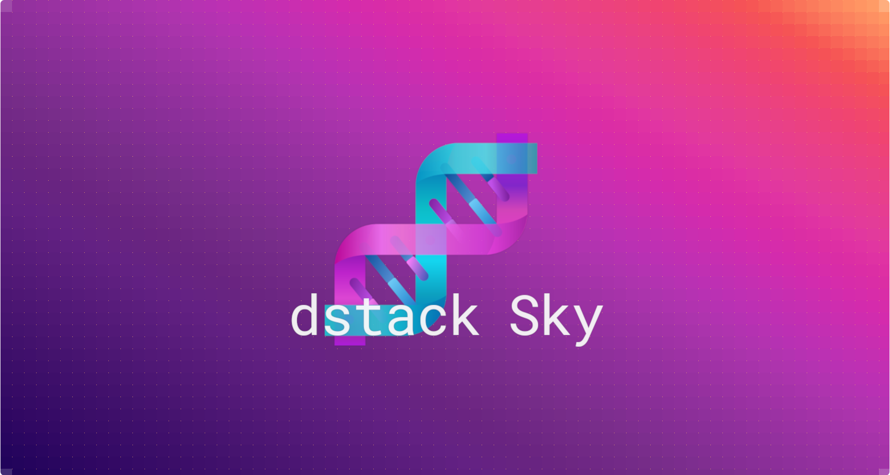

Introducing dstack Sky¶
Today we're previewing dstack Sky, a service built on top of
dstack that enables you to get GPUs at competitive rates from a wide pool of providers.

TL;DR¶
- GPUs at competitive rates from multiple providers
- No need for your own cloud accounts
- Compatible with
dstack's CLI and API - A pre-configured gateway for deploying services
Introduction¶
dstack is an open-source tool designed for managing AI infrastructure across various cloud platforms. It's lighter and
more specifically geared towards AI tasks compared to Kubernetes.
Due to its support for multiple cloud providers, dstack is frequently used to access on-demand and spot GPUs
across multiple clouds.
From our users, we've learned that managing various cloud accounts, quotas, and billing can be cumbersome.
To streamline this process, we introduce dstack Sky, a managed service that enables users to
access GPUs from multiple providers through dstack – without needing an account in each cloud provider.
What is dstack Sky?¶
Instead of running dstack server yourself, you point dstack config to a project
set up with dstack Sky.
$ dstack config --url https://sky.dstack.ai \
--project my-awesome-project \
--token ca1ee60b-7b3f-8943-9a25-6974c50efa75
Now, you can use dstack's CLI or API – just like you would with your own cloud accounts.
$ dstack run . -b tensordock -b vastai
# BACKEND REGION RESOURCES SPOT PRICE
1 vastai canada 16xCPU/64GB/1xRTX4090/1TB no $0.35
2 vastai canada 16xCPU/64GB/1xRTX4090/400GB no $0.34
3 tensordock us 8xCPU/48GB/1xRTX4090/480GB no $0.74
...
Shown 3 of 50 offers, $0.7424 max
Continue? [y/n]:
Backends
dstack Sky supports the same backends as the open-source version, except that you
don't need to set them up. By default, it uses all supported backends.
You can use both on-demand and spot instances without needing to manage quotas, as they are automatically handled for you.
With dstack Sky you can use all of dstack's features, incl. dev environments,
tasks, services, and
pools.
To use services, the open-source version requires setting up a gateway with your own domain.
dstack Sky comes with a pre-configured gateway.
$ dstack gateway list
BACKEND REGION NAME ADDRESS DOMAIN DEFAULT
aws eu-west-1 dstack 3.252.79.143 my-awesome-project.sky.dstack.ai ✓
If you run it with dstack Sky, the service's endpoint will be available at
https://<run name>.<project name>.sky.dstack.ai.
Let's say we define a service:
type: service
# Deploys Mixtral 8x7B with Ollama
# Serve model using Ollama's Docker image
image: ollama/ollama
commands:
- ollama serve &
- sleep 3
- ollama pull mixtral
- fg
port: 11434
# Configure hardware requirements
resources:
gpu: 48GB..80GB
# Enable OpenAI compatible endpoint
model:
type: chat
name: mixtral
format: openai
If it has a model mapping, the model will be accessible
at https://gateway.<project name>.sky.dstack.ai via the OpenAI compatible interface.
from openai import OpenAI
client = OpenAI(
base_url="https://gateway.<project name>.sky.dstack.ai",
api_key="<dstack token>"
)
completion = client.chat.completions.create(
model="mixtral",
messages=[
{"role": "user", "content": "Compose a poem that explains the concept of recursion in programming."}
]
)
print(completion.choices[0].message)
Now, you can choose — either use dstack via the open-source version or via dstack Sky,
or even use them side by side.
Credits
Are you an active contributor to the AI community? Request free dstack Sky credits.
dstack Sky is live on Product Hunt. Support it by giving it your vote!